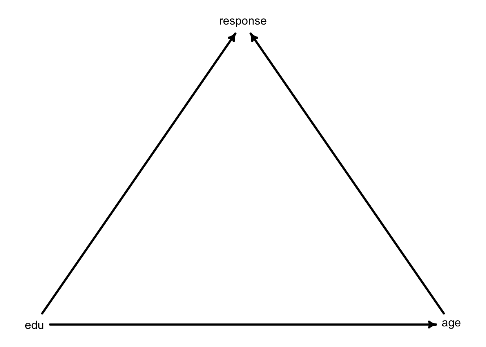
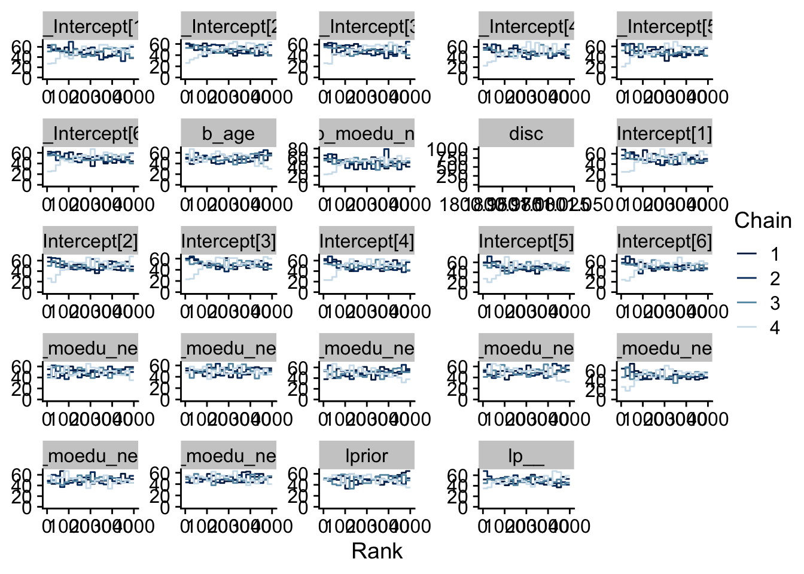
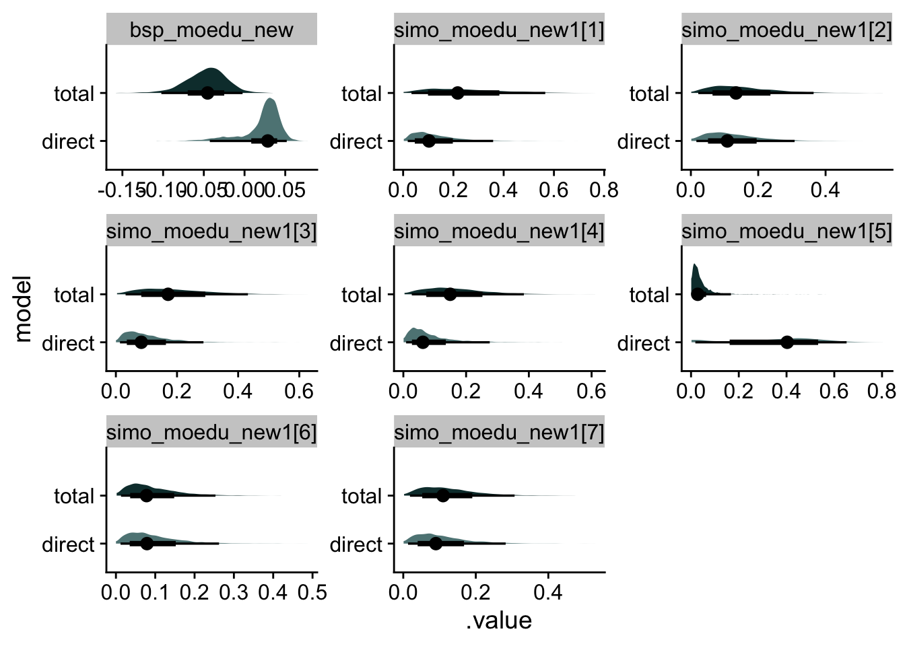

Please use an RMarkdown file to complete this assignment. Make sure you reserve code chunks for code and write out any interpretations or explainations outside of code chunks. Submit the knitted PDF file containing your code and written answers on Canvas.
Questions
In the trolley data —data(Trolley)— we saw how education level (modeled as an ordered category) is associated with responses. But is this association causal? One plausible confound is that education is also associated with age, through a causal process: People are older when they finish school than when they begin it. Reconsider the Trolley data in this light. Draw a DAG that represents hypothetical causal relationships among response, education, and age. Which statistical model or models do you need to evaluate the causal influence of education on responses? Fit these models to the trolley data. What do you conclude about the causal relationships among these three variables?
Click to see the answer
Packages used and default settings:
library(here)
here() starts at /Users/sweston2/Library/CloudStorage/GoogleDrive-weston.sara@gmail.com/My Drive/Work (google drive)/teaching/uobayes
── Conflicts ────────────────────────────────────────── tidyverse_conflicts() ──
✖ dplyr::filter() masks stats::filter()
✖ dplyr::lag() masks stats::lag()
ℹ Use the conflicted package (<http://conflicted.r-lib.org/>) to force all conflicts to become errors
library(brms)
Loading required package: Rcpp
Loading 'brms' package (version 2.22.0). Useful instructions
can be found by typing help('brms'). A more detailed introduction
to the package is available through vignette('brms_overview').
Attaching package: 'brms'
The following object is masked from 'package:stats':
ar
library(tidybayes)
Attaching package: 'tidybayes'
The following objects are masked from 'package:brms':
dstudent_t, pstudent_t, qstudent_t, rstudent_t
library(bayesplot)
This is bayesplot version 1.11.1.9000
- Online documentation and vignettes at mc-stan.org/bayesplot
- bayesplot theme set to bayesplot::theme_default()
* Does _not_ affect other ggplot2 plots
* See ?bayesplot_theme_set for details on theme setting
Attaching package: 'bayesplot'
The following object is masked from 'package:brms':
rhat
library(dagitty)library(cowplot)
Attaching package: 'cowplot'
The following object is masked from 'package:lubridate':
stamp
Here’s my DAG. Yours may differ. I think both education and age cause someone’s response. I also think education causes age: if I make someone get additional education, they will be older at the end of their training. On the other hand, if I were to make someone older, they wouldn’t necessarily be more educated because of it.
dag3 <-dagitty( "dag{ edu -> response; age -> response; edu -> age }" )coordinates(dag3) <-list( x=c( edu=-1, age=1, response=0) , y=c( edu=0, age=0, response=-1) )rethinking::drawdag( dag3, cex =1, lwd =3 )

Based on this, a model with only education would help me estimate the TOTAL effect of education on response. But if I want to estimate the DIRECT effect, I need to control for age. I’ll fit both models now.
data(Trolley, package ="rethinking")d <- Trolley# set up ordered categories for educationd <- d %>%mutate(edu_new =recode(edu,"Elementary School"=1,"Middle School"=2,"Some High School"=3,"High School Graduate"=4,"Some College"=5, "Bachelor's Degree"=6,"Master's Degree"=7,"Graduate Degree"=8) %>%as.integer())# estimate total effect of educationm_total <-brm(data = d,family = cumulative, response ~1+mo(edu_new), prior =c( prior(normal(0, 1.5), class = Intercept),prior(normal(0, 0.143), class = b, coef = moedu_new), prior(dirichlet(2, 2, 2, 2, 2, 2, 2), class = simo, coef = moedu_new1)),iter=2000, warmup=1000, cores=4, chains=4,file=here("files/models/hw6.1"))# estimate direct effect of educationm_direct <-brm(data = d,family = cumulative, response ~1+ age +mo(edu_new), prior =c( prior(normal(0, 1.5), class = Intercept),prior(normal(0, 1), class=b),prior(normal(0, 0.143), class = b, coef = moedu_new), prior(dirichlet(2, 2, 2, 2, 2, 2, 2), class = simo, coef = moedu_new1)),iter=2000, warmup=1000, cores=4, chains=4,file=here("files/models/hw6.2"))
I’m going to check that my chains have mixed using the trace rank plots.
`geom_path()`: Each group consists of only one observation.
ℹ Do you need to adjust the group aesthetic?

m_total looks good. I don’t love what’s happening with m_direct at the beginning, so perhaps I should have used more iterations with a longer warmup period.
Let’s compare the coefficient estimates for education on these models.
Joining with `by = join_by(.chain, .iteration, .draw, .variable, .value,
model)`

There are a few interesting things happening here. The main thing is that the coefficent called bsp_moedu_new is larger in the direct effect model than in the total effect. As a reminder, this is the coefficient on \(\phi\) called \(\beta_E\):
\[
\phi_i = \beta_E\sum_{j=0}^{E_i-1} \delta_j
\]
This value moves from a negative value in the total model to a small, possibly positive value in the direct model. This suggests that, after controlling for age, education makes participants more likely to give a higher response (or say that the scenarios are acceptable). But it’s hard to know exactly what’s happening. Instead, let’s plot our posterior predictive models to see if we can make more sense of this. I’m going to grab the distinct values of education. I need to also select an age variable, but I don’t want to cross these with education. Remember, it won’t make sense to have a 12-year-old with a graduate degree. (I hope). I’m going to select a single age that would be appropriate for all education levels. (Let’s say 50).
The main finding is that the effect of education is mainly through age. We see greater differentiation of education responses in the total model, but the response trends are more similar after stratifying on age. Again, our coefficient estimate went from large (mean around -.50) to small (mean around .2).
We also see the direction of the education effect is reversed. In the total plot, our less educated participants were more likely to choose 7, but in the direct plot, the less educated participatns are least likely to choose 7. This effect looks pretty small though.